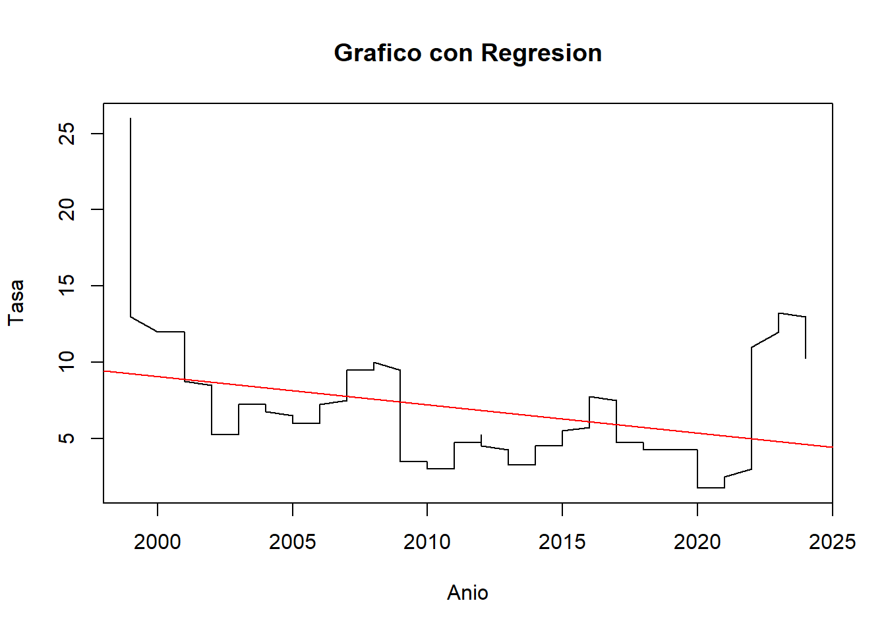
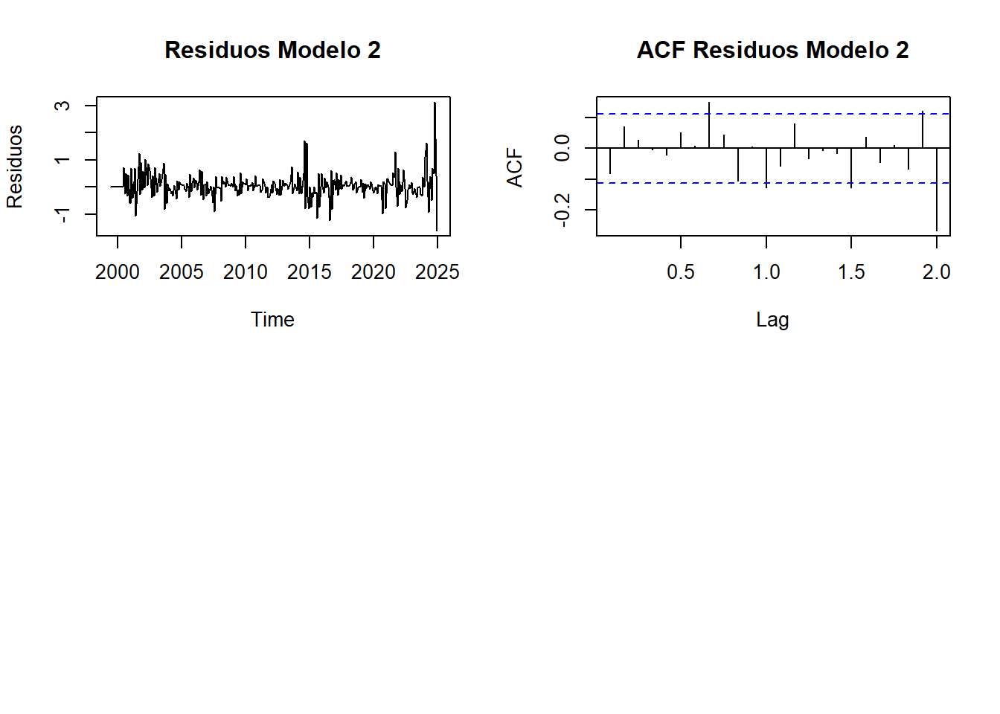

Capítulo: 2 Definición del Modelo ARIMA
COMPOSICIÓN DEL MODELO ARIMA
Diferenciación no estacional (d): Dado que ya se aplicó una primera diferenciación en los datos y todavía no es completamente estacionaria, es posible considerar incrementar el parámetro de a 2.
Estacionalidad (seasonal): Como existe un patrón estacional claro en la serie, conviene incluir una diferenciación estacional (D = 1) y ajustar los parámetros P y Q para capturar las dependencias estacionales. Se probará el modelo con un seasonal = c(1, 1, 1) para incluir un término autoregresivo y uno de promedio móvil estacional.
Componentes AR y MA (p y q): Dado que p y q determinan la cantidad de términos autoregresivos y de promedio móvil, se recomienda probar con valores más altos para q (como 3) y ajustar p a 1 o 2 si observas que hay correlación en los residuos. Esto puede ayudar a mejorar la precisión del modelo y su capacidad predictiva.
## Series: differenced_data
## ARIMA(1,2,3)(1,1,1)[12]
##
## Coefficients:
## ar1 ma1 ma2 ma3 sar1 sma1
## -0.9727 -0.7231 -0.9715 0.6948 -0.1013 -0.8826
## s.e. 0.0467 0.0637 0.0693 0.0509 0.0802 0.0548
##
## sigma^2 = 0.1596: log likelihood = -163.35
## AIC=340.7 AICc=341.1 BIC=366.46
##
## Training set error measures:
## ME RMSE MAE MPE MAPE MASE ACF1
## Training set -0.02662351 0.3862772 0.2369913 NaN Inf 0.6820726 -0.02211654
##
## Ljung-Box test
##
## data: Residuals from ARIMA(1,2,3)(1,1,1)[12]
## Q* = 24.811, df = 18, p-value = 0.1302
##
## Model df: 6. Total lags used: 24
Parámetros no estacionales
p = 1 (un término autoregresivo),
d = 2 (diferenciación de segundo orden para hacer estacionaria la serie en términos de tendencia),
q = 3 (tres términos de promedio móvil).
**parámetros estacionales*, donde:**
P = 1 (un término autoregresivo estacional),
D = 1 (diferenciación estacional),
Q = 1 (un término de promedio móvil estacional),
Los coeficientes y sus errores estándar sugieren que la mayoría de los términos son significativos (coeficientes altos en relación con sus errores estándar).
El test de Ljung-Box evalúa si los residuos del modelo son independientes (no correlacionados). Con un p-valor de 0.1302, se sugiere que los residuos no tienen autocorrelación significativa. Esto indica que el modelo está capturando bien la estructura de la serie.
Los resultados muestran que el modelo ARIMA(1,2,3)(1,1,1)[12] es probablemente adecuado para la serie.
El p-valor del test de Ljung-Box mayor a 0.05 indica que el modelo ha eliminado la mayoría de la autocorrelación en los residuos, lo cual es positivo.
# Análisis de Residuos
# Normal QQ Plot de los residuos
residuos_diff <- residuals(modelo_arima)
par(mfrow = c(1, 1)) # Asegúrate de que solo hay un gráfico en la ventana
qqnorm(residuos_diff, main = "Normal QQ Plot de Residuos")
qqline(residuos_diff, col = "red")
# Realizar el test de normalidad de Shapiro-Wilk
shapiro_test <- shapiro.test(residuos_diff)
print(shapiro_test)##
## Shapiro-Wilk normality test
##
## data: residuos_diff
## W = 0.82525, p-value < 2.2e-16Teniendo en cuenta la prueba de normalidad de Shapiro-Wilk, con un valor de 0.82525, siendo relativamente menor a 1, indica que los residuos no siguen una distribución normal.
En cuanto a p-value < 2.2e-16, al ser una cifra tan pequeña, se confirma que los residuos no son normales.
POSIBLE MODELO 2
# Aplicar auto.arima para determinar los parámetros adecuados, incluyendo las diferenciaciones
modelo_auto <- auto.arima(differenced_data)
print(modelo_auto)## Series: differenced_data
## ARIMA(1,1,2)
##
## Coefficients:
## ar1 ma1 ma2
## -0.5956 -0.1114 -0.4425
## s.e. 0.7747 0.7650 0.5442
##
## sigma^2 = 0.1556: log likelihood = -148.41
## AIC=304.82 AICc=304.95 BIC=319.71Teniendo en cuenta el anterior modelo, en donde se cuetan con los parámetros de autorregresivo, diferenciación y media móvil (1, 1, 2) respectivamente. Teniendo en cuenta los resultados en los coeficientes, se determina:
Autorregresivo: ar1 = -0.5956: con un valor negativo, indica que hay una relación inversa entre el valor actual de la serie y su valor anterior. s.e. = 0.7747: al tener un resultado alto, se determina que la estimación es menos precisa.
Media Móvil: ma1 = -0.1114: indica que la predicción fue más alta al valor real en el período inmediatamente anterior, es decir, cuando t=-1, arrojando de esta forma un residuo negativo. Este residuo corresponde a la media del resultado anterior. Lo anterior, relacionado con s.e.= 0.7650, indica que la estimación es relativamente imprecisa en comparación con el valor del coeficiente.
ma2 = -0.4425: este resultado tiene un valor negativo, similar a ma1; sin embargo, este resultado ocurre en el segundo error pasado (dos períodos atrás), es decir cuando t=-2. Con s.e. = 0.5442, al ser menor que el de ma1, indica que ma2 es más precisa, aunque continúa teniendo una inexactitud sobre el valor.
# Ajuste del modelo ARIMA
modelo_arima2 <- Arima(differenced_data, order = c(1, 1, 2), seasonal = c(1, 1, 0))
summary(modelo_arima2)## Series: differenced_data
## ARIMA(1,1,2)(1,1,0)[12]
##
## Coefficients:
## ar1 ma1 ma2 sar1
## 0.9274 -1.6115 0.6144 -0.4744
## s.e. 0.0393 0.0597 0.0583 0.0620
##
## sigma^2 = 0.213: log likelihood = -190.4
## AIC=390.8 AICc=391.01 BIC=409.22
##
## Training set error measures:
## ME RMSE MAE MPE MAPE MASE ACF1
## Training set 0.04515282 0.4485344 0.2876226 NaN Inf 0.8277919 -0.08017884
##
## Ljung-Box test
##
## data: Residuals from ARIMA(1,1,2)(1,1,0)[12]
## Q* = 62.201, df = 20, p-value = 3.233e-06
##
## Model df: 4. Total lags used: 24# Pronosticar los próximos 72 períodos (6 años)
pronostico2 <- forecast(modelo_arima2, h = 72)
# Graficar el pronóstico con el eje x adecuado
plot(pronostico2, xlab = "Año", ylab = "Tasa", main = "Pronóstico de Tasa")
Autorregresivo: ar1 = 0.9274: Con un valor positivo, indica que existe una relación directa entre el valor actual de la serie y su valor anterior. Es decir, cuando el valor en el periodo t-1 aumenta, el valor en el periodo actual t tiende a aumentar también.
s.e. = 0.0393: Dado que el error estándar es bajo, indica que la estimación de este coeficiente es muy precisa. Esto sugiere que el modelo tiene una gran confianza en la relación directa entre el valor actual y el valor anterior de la serie temporal.
Media Móvil: ma1 = -1.6115: El coeficiente negativo para ma1 indica que hubo un error negativo en la predicción en el periodo inmediatamente anterior (t-1). Es decir, el modelo predijo un valor más alto que el valor real en el periodo t-1, lo que resultó en un residuo negativo. Este residuo se ajusta en el modelo a través del término de media móvil. s.e. = 0.0597: El error estándar para ma1 es relativamente bajo, lo que sugiere que esta estimación tiene alta precisión. En otras palabras, el ajuste de la predicción actual basado en el error de la predicción del periodo anterior es bastante confiable.
ma2 = 0.6144: Este coeficiente positivo para ma2 indica que el error positivo en la predicción de dos periodos atrás (t-2) tiene una relación directa con el valor actual de la serie; es decir, el modelo sobreestimó el valor real dos periodos atrás, lo que resultó en un residuo positivo que ahora ajusta la predicción para el periodo actual. s.e. = 0.0583: Al igual que el error estándar de ma1, el error estándar de ma2 es bajo, lo que indica que esta estimación es también relativamente precisa.
Autorregresivo estacional (SAR1): sar1 = -0.4744: El coeficiente negativo para sar1 sugiere que existe una relación inversa entre el valor actual de la serie y el valor de la serie con un rezago estacional de un periodo (es decir, el valor de la serie 12 periodos atrás). Si el valor de la serie en el periodo t-12 fue alto, el valor en el periodo actual t tenderá a ser más bajo. s.e. = 0.0620: El error estándar para sar1 es relativamente bajo, lo que indica que esta estimación también es bastante precisa y que el modelo tiene una buena confianza en el impacto de la componente estacional.
el modelo ARIMA(1,1,2)(1,1,0) tiene coeficientes precisos para los diferentes componentes (AR, MA y SAR), lo que sugiere que el modelo está bien ajustado y que las relaciones capturadas por los coeficientes son confiables.
##
## ***** ESTIMATION WITH ANALYTICAL GRADIENT *****
##
##
## I INITIAL X(I) D(I)
##
## 1 1.340879e-01 1.000e+00
## 2 5.000000e-02 1.000e+00
## 3 5.000000e-02 1.000e+00
##
## IT NF F RELDF PRELDF RELDX STPPAR D*STEP NPRELDF
## 0 1 -1.437e+02
## 1 3 -1.480e+02 2.86e-02 7.61e-02 3.8e-01 1.1e+03 1.0e-01 4.29e+01
## 2 4 -1.596e+02 7.30e-02 1.12e-01 2.6e-01 2.0e+00 1.0e-01 2.02e+02
## 3 6 -1.696e+02 5.86e-02 1.37e-01 3.5e-01 2.0e+00 2.7e-01 9.83e+01
## 4 7 -1.778e+02 4.64e-02 2.54e-01 2.4e-01 2.0e+00 2.7e-01 3.97e+00
## 5 9 -1.927e+02 7.71e-02 4.72e-02 2.0e-02 2.0e+00 2.7e-02 4.22e-01
## 6 11 -1.934e+02 3.51e-03 4.53e-03 2.3e-03 7.1e+00 2.7e-03 5.19e+00
## 7 12 -1.935e+02 6.17e-04 9.39e-04 1.8e-03 2.0e+00 2.7e-03 1.07e+00
## 8 16 -1.945e+02 5.36e-03 7.15e-03 5.6e-02 2.0e+00 7.2e-02 8.75e-01
## 9 17 -1.951e+02 2.97e-03 4.48e-03 5.9e-02 2.0e+00 7.2e-02 2.88e-01
## 10 18 -1.960e+02 4.50e-03 5.76e-03 5.5e-02 1.9e+00 7.2e-02 1.89e-01
## 11 19 -1.965e+02 2.57e-03 3.53e-03 5.2e-02 1.9e+00 7.2e-02 5.76e-02
## 12 21 -1.965e+02 3.32e-04 9.85e-04 2.3e-02 1.5e+00 3.3e-02 4.04e-03
## 13 22 -1.966e+02 1.11e-04 4.83e-04 2.0e-02 4.3e-02 3.3e-02 4.83e-04
## 14 23 -1.966e+02 1.72e-04 1.99e-04 1.0e-02 0.0e+00 1.4e-02 1.99e-04
## 15 24 -1.966e+02 4.62e-06 5.26e-05 7.2e-03 0.0e+00 9.6e-03 5.26e-05
## 16 25 -1.966e+02 1.45e-05 1.46e-05 3.2e-03 4.8e-01 4.8e-03 1.56e-05
## 17 26 -1.966e+02 1.82e-06 9.06e-07 9.2e-04 0.0e+00 1.3e-03 9.06e-07
## 18 36 -1.966e+02 -1.45e-15 1.41e-17 1.5e-14 2.9e+07 2.0e-14 1.21e-09
##
## ***** FALSE CONVERGENCE *****
##
## FUNCTION -1.966092e+02 RELDX 1.527e-14
## FUNC. EVALS 36 GRAD. EVALS 18
## PRELDF 1.409e-17 NPRELDF 1.212e-09
##
## I FINAL X(I) D(I) G(I)
##
## 1 1.304269e-02 1.000e+00 1.376e-01
## 2 3.225588e-01 1.000e+00 -8.836e-03
## 3 6.542356e-01 1.000e+00 -8.460e-03##
## Call:
## garch(x = residuos_diff, order = c(1, 1))
##
## Model:
## GARCH(1,1)
##
## Residuals:
## Min 1Q Median 3Q Max
## -4.7470 -0.5934 -0.1147 0.3248 5.6322
##
## Coefficient(s):
## Estimate Std. Error t value Pr(>|t|)
## a0 0.013043 0.001689 7.721 1.15e-14 ***
## a1 0.322559 0.056827 5.676 1.38e-08 ***
## b1 0.654236 0.038567 16.964 < 2e-16 ***
## ---
## Signif. codes: 0 '***' 0.001 '**' 0.01 '*' 0.05 '.' 0.1 ' ' 1
##
## Diagnostic Tests:
## Jarque Bera Test
##
## data: Residuals
## X-squared = 650.13, df = 2, p-value < 2.2e-16
##
##
## Box-Ljung test
##
## data: Squared.Residuals
## X-squared = 0.024148, df = 1, p-value = 0.8765Coeficiente del modelo:
a0 = 0.013043: Este valor es significativo, lo que indica que existe una volatilidad base que es constante y no depende de los errores o la volatilidad pasada.
a1 = 0.322559: Este coeficiente refleja el impacto de los errores pasados sobre la volatilidad actual. Un valor de a1 = 0.322559 indica que los errores pasados tienen una relación positiva moderada con la volatilidad actual. Además, este coeficiente es altamente significativo (p-value < 0.001), lo que sugiere que el impacto de los errores pasados son importantes en el modelo.
b1 = 0.654236: Este coeficiente refleja el impacto de la volatilidad pasada sobre la volatilidad actual. Un valor de b1 = 0.654236 indica que la volatilidad pasada tiene una gran influencia en la volatilidad futura. Este coeficiente también es altamente significativo (p-value < 2e-16), lo que sugiere que la persistencia de la volatilidad es fuerte.
Error estándar y significancia: Error estándar de a0 = 0.001689, a1 = 0.056827, b1 = 0.038567: Los errores estándar son relativamente bajos en comparación con los coeficientes estimados, lo que sugiere que las estimaciones de los parámetros del modelo son precisas.
Los valores de t y los p-values asociados a los coeficientes (a0, a1, b1) muestran que todos los coeficientes son estadísticamente significativos. Esto indica que cada uno de estos parámetros tienen un impacto significativo en la volatilidad modelada.
Resultados de los tets diagnósticos:
Jarque-Bera Test: Este test evalúa la normalidad de los residuos. El valor de X-squared = 650.13 y el p-value < 2.2e-16 indican que los residuos no siguen una distribución normal.
Box-Ljung Test (Squared Residuals): Este test evalúa la autocorrelación en los residuos al cuadrado, lo que en este caso indica si hay dependencias en la volatilidad. El valor X-squared = 0.024148 y p-value = 0.8765 sugieren que no hay autocorrelación significativa en los residuos al cuadrado, lo que implica que el modelo GARCH(1,1) ha capturado adecuadamente la dinámica de la volatilidad y no quedan patrones significativos en los residuos.
2.1 Algoritmo de Holt Winter
Puede manejar la estacionalidad en el conjunto de datos simplemente calculando el valor central y luego sumándolo o multiplicándolo por la pendiente y la estacionalidad. Solo tenemos que asegurarnos de ajustar el conjunto correcto de parámetros, y tenemos el mejor ajuste.
Recuerde siempre verificar la eficiencia del modelo utilizando el valor MAPE (error porcentual absoluto medio) o el valor RMSE (error cuadrático medio), y la precisión puede depender del problema comercial y el conjunto de datos disponible para entrenar y probar el modelo.
Se observan la tendencia y los ciclos
# Graficar solo líneas
plot(data2$Anio, data2$Tasa, type = "l", main = "Grafico con Regresion", xlab = "Anio", ylab = "Tasa")
# Ajustar el modelo de regresión lineal
modelo <- lm(Tasa ~ Anio, data = data2)
# Agregar la línea de regresión al gráfico
abline(modelo, col = "red")# Graficar
ggplot(data2, aes(x = Mes, y = Anio, fill = Tasa)) +
geom_tile() + # Usar geom_tile para crear un gráfico de calor
scale_fill_gradient(low = "white", high = "blue") + # Colores del llenado
labs(title = "Tasa por Año y Mes", x = "Mes", y = "Año") +
theme_minimal()
# serie_temporal <- ts(data2[["Tasa"]], start = c(min(data2$Anio), 1), frequency = 12)
# Extraer el ciclo de la serie temporal
cicle <- cycle(ts_data)
# Ver los ciclos
print(cicle)## Jan Feb Mar Apr May Jun Jul Aug Sep Oct Nov Dec
## 1999 5 6 7 8 9 10 11 12
## 2000 1 2 3 4 5 6 7 8 9 10 11 12
## 2001 1 2 3 4 5 6 7 8 9 10 11 12
## 2002 1 2 3 4 5 6 7 8 9 10 11 12
## 2003 1 2 3 4 5 6 7 8 9 10 11 12
## 2004 1 2 3 4 5 6 7 8 9 10 11 12
## 2005 1 2 3 4 5 6 7 8 9 10 11 12
## 2006 1 2 3 4 5 6 7 8 9 10 11 12
## 2007 1 2 3 4 5 6 7 8 9 10 11 12
## 2008 1 2 3 4 5 6 7 8 9 10 11 12
## 2009 1 2 3 4 5 6 7 8 9 10 11 12
## 2010 1 2 3 4 5 6 7 8 9 10 11 12
## 2011 1 2 3 4 5 6 7 8 9 10 11 12
## 2012 1 2 3 4 5 6 7 8 9 10 11 12
## 2013 1 2 3 4 5 6 7 8 9 10 11 12
## 2014 1 2 3 4 5 6 7 8 9 10 11 12
## 2015 1 2 3 4 5 6 7 8 9 10 11 12
## 2016 1 2 3 4 5 6 7 8 9 10 11 12
## 2017 1 2 3 4 5 6 7 8 9 10 11 12
## 2018 1 2 3 4 5 6 7 8 9 10 11 12
## 2019 1 2 3 4 5 6 7 8 9 10 11 12
## 2020 1 2 3 4 5 6 7 8 9 10 11 12
## 2021 1 2 3 4 5 6 7 8 9 10 11 12
## 2022 1 2 3 4 5 6 7 8 9 10 11 12
## 2023 1 2 3 4 5 6 7 8 9 10 11 12
## 2024 1 2 3 4 5 6 7 8 9 10 11 12# boxplot(data2~cycle(data2))
# Crear el boxplot por ciclo (mes) para observar la estacionalidad
boxplot(ts_data ~ cycle(ts_data),
xlab = "Mes", ylab = "Tasa",
main = "Boxplot de Tasa por Mes")
# plot(log(airmiles), ylab='log(airmiles)', xlab='Anio', main='Logaritmo de la tasa')
plot(data2$Anio, log(data2$Tasa), type = "l",
ylab = "Log(Tasa)", xlab = "Año",
main = "Logaritmo de la Tasa a lo largo del Tiempo")
2.2 Modelo Holt-Winter
# modelo_HW = HoltWinters(log(airmiles), seasonal = "additive")
# plot(modelo_HW, main = 'Ajuste con Holt-Winters', xlab = 'Anio', ylab='log(airmiles)')
# Aplicar el modelo Holt-Winters a la serie temporal
modelo_HW <- HoltWinters(ts_data)
print(modelo_HW)## Holt-Winters exponential smoothing with trend and additive seasonal component.
##
## Call:
## HoltWinters(x = ts_data)
##
## Smoothing parameters:
## alpha: 0.9409767
## beta : 0.2941339
## gamma: 1
##
## Coefficients:
## [,1]
## a 26.078382560
## b 1.351095717
## s1 0.013514274
## s2 0.042701886
## s3 -0.084488171
## s4 -0.120823220
## s5 -0.046940131
## s6 -0.105835904
## s7 -0.176555877
## s8 -0.002083574
## s9 0.085858823
## s10 0.501395118
## s11 0.266415988
## s12 -0.078382560# Graficar el ajuste del modelo a los datos históricos
plot(modelo_HW, main = "Ajuste del Modelo Holt-Winters")
# Pronóstico con Holt-Winters para los próximos 12 meses
pronostico_hw <- forecast(modelo_HW, h = 12)
# Graficar el pronóstico
plot(pronostico_hw, main = "Pronostico Holt-Winters para Tasa")
Parámetro suavizado:
Alpha (α = 0.9409767): Este es el parámetro de suavizado para el componente de nivel. Un valor cercano a 1, como el que está arrojando el resultado, indica que el modelo le da gran peso a los datos recientes para estimar el nivel actual de la serie. Esto significa que las observaciones recientes tienen un impacto significativo en la estimación del nivel.
Beta (β = 0.2941339): Este es el parámetro de suavizado para el componente de tendencia en el modelo de Holt-Winters. Un valor de β moderadamente bajo, como 0.2941339, sugiere que el modelo da un peso relativamente moderado a los cambios en la tendencia. Es decir, el modelo no es extremadamente sensible a las variaciones en la tendencia, pero sigue siendo capaz de capturarlas de manera significativa. Con este valor, el modelo ajusta la tendencia de forma más suave y gradual, lo que implica que no tiene una sobrereacción ante cambios recientes en la dirección de los datos.
Gamma (γ = 1): Este es el parámetro de suavizado para el componente estacional. Un valor de γ = 1 sugiere que el modelo da completo peso a los componentes estacionales previos en la serie.

Se predice el método Holt Winters
## fit upr lwr
## Jan 2025 27.44299 28.23593 26.65006
## Feb 2025 28.82328 30.07272 27.57383
## Mar 2025 30.04718 31.76924 28.32513
## Apr 2025 31.36194 33.58414 29.13975
```